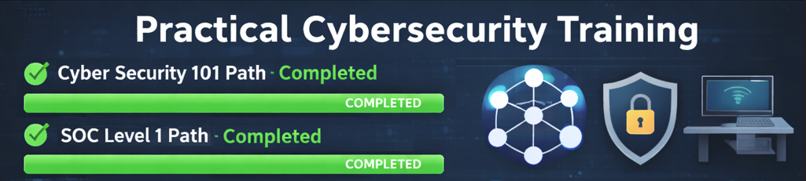

CompTIA Security+ Certified | Cyber Security
I am a First-Class Computer Science graduate and CompTIA Security+ certified, developing and demonstrating practical cyber security capability through structured lab experimentation and hands-on training. I independently funded and completed the Security+ certification and built a personal CyberLab environment to continue developing practical security skills beyond formal study. CyberLab is a controlled Windows and Kali Linux virtual lab environment used to explore defensive security concepts including network enumeration, authentication monitoring, and Windows event log analysis. Within this environment I design and execute structured experiments that simulate common attacker behaviour, analyse the resulting system telemetry, and identify potential detection opportunities. Alongside this practical work, I am progressing through the TryHackMe SOC Level 1 learning path to further strengthen my understanding of security monitoring, alert triage, and incident investigation workflows. My goal is to begin my career in cyber security within a defensive or Security Operations role where I can apply strong technical foundations, analytical thinking, and a disciplined approach to security investigation. My technical focus currently includes Windows security event log analysis, authentication monitoring, network enumeration behaviour, and system telemetry investigation within controlled Windows and Linux lab environments. Supporting skills include Python scripting for analysis and automation, as well as experience working within virtualised infrastructure using VirtualBox.
CyberLab Environment
Detection-Focused Security Environment
CyberLab Network
CyberLab is a controlled virtual environment designed to develop and demonstrate practical defensive cyber security skills. The lab consists of a segmented network running Windows 11 and Kali Linux within VirtualBox. The environment allows controlled simulation of common attacker activity such as network enumeration, authentication attempts, and service discovery, while observing the resulting system behaviour and logs from a defender’s perspective. Each experiment follows a structured methodology including defined objectives, controlled execution, evidence collection, and detection analysis. The aim is to develop a practical understanding of how security events appear in system telemetry and how suspicious behaviour can be identified through monitoring and investigation.

Key Features
- Segmented Windows and Kali lab network
- Controlled attacker simulation environment
- Structured experiment documentation
- Windows event log analysis and telemetry investigation
- Snapshot and baseline configuration management
Security Experiments
Exp_001 Local Enumeration
 This experiment simulates the early stages of an internal attacker performing reconnaissance within a segmented network.
Using a Kali Linux attacker system, controlled enumeration was performed against a Windows 11 host inside the isolated
CyberLab network.
The objective was to identify accessible services and understand how common reconnaissance techniques operate within
an internal environment. The experiment began with host availability verification using ICMP requests, followed by
multiple Nmap scans including TCP SYN scanning, service version detection, and full TCP port enumeration.
The results revealed several default Windows services accessible within the network and demonstrated how attackers
can gather useful system intelligence without authentication. From a defensive perspective, Windows event logs were
reviewed to determine how much telemetry this activity generated in a default configuration.
The experiment established a baseline for later experiments by highlighting that basic reconnaissance behaviour
can generate limited high-value alerts without enhanced logging or monitoring systems in place.
This experiment simulates the early stages of an internal attacker performing reconnaissance within a segmented network.
Using a Kali Linux attacker system, controlled enumeration was performed against a Windows 11 host inside the isolated
CyberLab network.
The objective was to identify accessible services and understand how common reconnaissance techniques operate within
an internal environment. The experiment began with host availability verification using ICMP requests, followed by
multiple Nmap scans including TCP SYN scanning, service version detection, and full TCP port enumeration.
The results revealed several default Windows services accessible within the network and demonstrated how attackers
can gather useful system intelligence without authentication. From a defensive perspective, Windows event logs were
reviewed to determine how much telemetry this activity generated in a default configuration.
The experiment established a baseline for later experiments by highlighting that basic reconnaissance behaviour
can generate limited high-value alerts without enhanced logging or monitoring systems in place.
Exp_003 Re-run Enumeration With Logging
This experiment repeats the internal reconnaissance activity performed in Experiment 001 after enabling enhanced
Windows security logging on the target system. The goal was to evaluate how improved audit policies affect the
visibility of attacker reconnaissance activity.
The same enumeration process was repeated using ICMP host discovery and multiple Nmap scanning techniques to ensure
that the activity itself remained identical to the baseline experiment. This allowed a direct comparison of the
telemetry generated before and after enabling enhanced logging.
Following the scans, Windows Event Viewer and firewall logs were examined to identify additional events generated
by the operating system. Enhanced audit configuration resulted in significantly increased visibility of network
connection attempts through Windows Filtering Platform events.
The experiment demonstrates a key defensive principle: reconnaissance activity that appears benign in a default
configuration can become far more observable when appropriate logging policies and monitoring systems are enabled.
Exp_005 Windows Event Log Deep Dive
This experiment focuses on structured analysis of Windows Security Event Logs generated during previous CyberLab
activities. The exercise simulates the investigative workflow performed by Security Operations Center analysts
when analysing authentication and network activity within enterprise environments.
Using Windows Event Viewer, authentication-related events and network telemetry were examined in detail.
Particular attention was given to Event ID 4625 (failed logon attempts) as well as network filtering events
recorded during earlier reconnaissance and authentication testing.
The analysis involved filtering and inspecting event metadata including source network address, account name,
logon type, and failure reason. By examining these attributes, the experiment demonstrates how analysts can
trace suspicious activity and attribute behaviour to specific systems within a network.
This exercise highlights the importance of understanding Windows event structures and demonstrates how detailed
system telemetry can support threat detection, forensic analysis, and incident investigation workflows.
Practical Training
TryHackMe
I am actively developing practical cyber security skills through the TryHackMe platform. I have completed the Cyber Security 101 course and am currently progressing through the SOC Level 1 learning path. My focus is on developing a strong understanding of the material and applying it through hands-on exercises rather than simply completing tasks quickly. This approach has strengthened my knowledge of network security, threat monitoring, and incident investigation techniques. Through these labs I continue to develop the analytical thinking and problem-solving skills required within a real-world Security Operations environment, while reinforcing the concepts explored within my CyberLab experiments.

Software Development


My academic background in Computer Science provided a strong foundation in software engineering and programming. Through coursework and personal projects I developed applications in Python and C++, building experience with program structure, debugging, memory management, and system behaviour. These development skills now support my cyber security work by enabling me to understand how software behaves internally, analyse system logs, and develop small tools to assist with security investigation and automation. One example project involved developing a Python application using the Pygame library. The project required implementing structured program logic, event handling, object management, and debugging techniques. This work strengthened my Python programming skills which are now being applied to security-focused projects such as log analysis and automation tools.
In addition to Python, I have experience developing software in C++, which strengthened my understanding of memory management, pointers, and program execution at a lower level. This knowledge is valuable when analysing how software interacts with system resources and when understanding the technical causes of many security vulnerabilities.